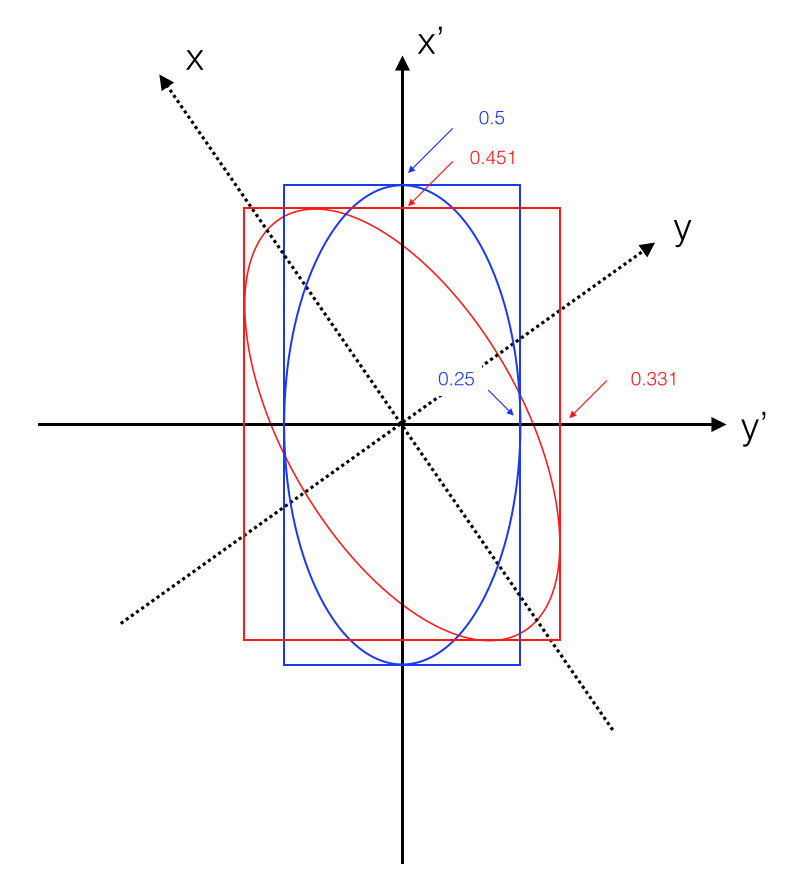

Measurements uncertainties {#ch:errors}¶
In this chapter we describe how to treat and combine the statistical and systematic uncertainties associated to measurements.
Definitions¶
Precision: how reproducible is the measurement under identical
conditions.
Accuracy: how close the measured value is to the nominal/reference
value.
One can be very precise, but not accurate (always measuring exactly the
same, but wrong value). More measurements may increase the precision,
but not the accuracy.
(Intrinsic) Resolution: the smallest change in a measured value that
the instrument can detect. NB: many particle detector systems are based
on internal statistical processes (like energy loss, shower development
in calorimeters etc..), and thus their resolution comes from the
addition of several sources which can are typically described by a
“Gaussian” distribution.
We will use the names resolution for instruments and sensitivity
measurements.\
![Precision and accuracy.[wiki]](../_images/precisionAccuracy.png) {#fig:precisionAccuracy
width=”50%”}
{#fig:precisionAccuracy
width=”50%”}
Measurement range: the difference between largest and smallest input
value that an instrument is capable of measuring/reading
Dynamic range: the ratio between measurement range and the
resolution (quoted usually as log value “decibel=dB” in base-10)
Bandwidth: the difference between the upper and lower frequencies
(in electronics) that an instrument is capable of measuring. Or the
maximal throughput for data transfer (computing)
Uncertainties and the CLT¶
Any measurement we perform is affected by several uncertainties generated by several different sources. Let’s say you measure your weight on a scale. The number indicated by the needle will be affected by several sources of uncertainties: parallax, rounding, your movements etc… That’s the reason why when presenting a measurement we don’t just give the central value \(x\), but we \(\textit{must}\) quote its uncertainty \(\pm \sigma_x\). This number is usually represented by a Gaussian standard deviation. The reason why we can use the Gaussian assumption as a way to present the uncertainty (i.e. why we implicitly make the assumption that the measurements are Gaussian distributed) comes from the central limit theorem (see Sec. [sec:CLT]{reference-type=”ref” reference=”sec:CLT”}). A measurement affected by the effect of many independent additive effects will be “approximately” Gaussian distributed. “Approximately” means that the core of the distribution is well described by a Gaussian distribution, while the tails typically will show deviations.
Error propagation {#SectionErrorPropagation}¶
Typically the measurement of an observable is extracted from the combination of several different quantities measured directly. In this section we will analyse how the uncertainty on those quantities can be combined/propagated to the final measurement.
Function of one variable¶
We start the discussion about error propagation from the most simple case. Let \(f\) be a function of only one variable \(x\). The basic idea is to see how much the function changes when the values of \(x\) moves within its uncertainty. For this we make a Taylor expansion of \(f\) around \(x_{0}\) to the first order:
Again we assume that the uncertainties are small, which allows us to
drop the higher-order terms of the Taylor expansion. We thus get the
result: $\(\begin{aligned}
V(f) &=&\left(\frac{\partial f}{\partial x}\right)^2V(x)+\left(\frac{\partial f}{\partial y}\right)^2V(y)+2\frac{\partial f}{\partial x}\frac{\partial f}{\partial y}\cdot \mbox{cov}(x,y)\\
\sigma_{f}^2&=&\left(\frac{\partial f}{\partial x}\right)^2\sigma_x^2+\left(\frac{\partial f}{\partial y}\right)^2\sigma_y^2+2\frac{\partial f}{\partial x}\frac{\partial f}{\partial y}\cdot \mbox{cov}(x,y)\\\end{aligned}\)\(
where \)\mbox{cov}(x,y) = \left<(x-
For continuous variables the diagonal elements \(V_{ij}\) are the variances $\(\sigma_{x_i}^2=\int (x_i-<x_i>)^2 f(x_1,\ldots x_n)dx_1\ldots dx_n\)\( and they are always positive. The off-diagonal elements can be positive or negative, and they represent the covariances: \)\(V_{ij}=\int (x_i-<x_i>)(x_j-<x_j>) f(x_1,\ldots x_n)dx_1\ldots dx_n.\)\(\ **Example** Let \)A = \frac{F-B}{F+B}\( be the measured forward/backward-asymmetry of an angular distribution, where \)F\( (\)B\() is the forward (backward) hemisphere of a detector. Be \)N = F+B\( the total number of measured events. If the uncertainties \)\sigma_{F}\( and \)\sigma_{B}\( for \)F\( and \)B\( are uncorrelated (this is the case if \)N\( is not fixed), we have \)\(\sigma_A=\frac{2FB}{N^2}\sqrt{\left(\frac{\sigma_F}{F}\right)^2 +\left(\frac{\sigma_B}{B}\right)^2}.\)\( In the case of Poisson distributed events (\)\sigma_{F}^{2} = F\( and \)\sigma_{B}^{2}=B\() we have: \)\(\begin{aligned} \sigma_A&=&\frac{2FB}{N^2}\sqrt{\frac{1}{F} +\frac{1}{B}} \\ \sigma_A&=&\frac{1-A^2}{2}\sqrt{\left(\frac{1}{F}+\frac{1}{B}\right)}\end{aligned}\)$ From that we can distinguish two limiting cases:
\(F\sim B\sim N/2\) and the asymmetry \(A\sim 0\):
Thus the uncertainty is \(\sigma_A\sim \frac{\delta N}{N}\).\(F\gg B\) and hence \(A\sim +1\):
\(\sigma_A\sim \frac{2\delta B}{N}\), i.e. the uncertainty is dominated by the uncertainty of the smaller number of events.
Alternatively we can also fix the total number of events \(N\) and consider the events \(F\) and \(B\) as binomially distributed: let \(p\) is the probability that a particle is registered in the forward hemisphere of the detector. From this it follows that: \(\sigma_F^2=\sigma_B^2=Np(1-p)\sim FB/N\). Because \(F\) and \(B\) are fully anti-correlated (which means that cov(F,B) = \(- \sigma^2_{F}\)), it follows $\(\sigma_A^2=\left(\frac{\partial A}{\partial F}\, \, \frac{\partial A}{\partial B} \right)\left(\begin{array}{cc}\sigma_F^2 & -\sigma_F^2 \\ -\sigma_F^2 & \sigma_F^2 \end{array}\right) {\frac{\partial A}{\partial F}\choose \frac{\partial A}{\partial B}}.\)\( Finally with \)\partial A/ \partial F= - \partial A/ \partial B=1/N\( we get: \)\(\sigma_A=\frac{2}{N}\sqrt{\frac{FB}{N}}\)$\
Several functions of several variables¶
Finally we look at the most general case, in which we have a set of random variables \({\bf x} = (x_{1}, \ldots, x_{n})\) with expectation values \({\bf \mu}= (\mu_{1}, \ldots, \mu_{n})\) belonging to the set of probability density functions \({\bf F}({\bf x})={f_1,f_2,\ldots,f_n}\). The covariance matrix \(U_{kl}\) is then given by: $\(U_{kl}=cov(f_k,f_l)= \sum_{i,j}\left(\frac{\partial f_k}{\partial x_i}\frac{\partial f_l}{\partial x_j}\right)_{\mbox{\bf x=\){\bf \mu}\(}} cov(x_i,x_j).\)\( This can be written in a shortened way as \)U = A, V, A^{T}\( where the matrix \)A\( of the derivatives is given by \)\(A_{ij}=\left(\frac{\partial f_i}{\partial x_j}\right)_{\mbox{\bf x=\)\mu\(}}\)\( and \)A^{T}\( is its transpose. The matrices \)U=cov(f_{i},f_{j})\( and \)V=cov(x_{i},x_{j})\( contain the covariance for \)f\( and \)x\(. Both are symmetric with dimension \)n \times n\(.\ \ **Example** Transformation to polar coordinates in 2D. Assume we have measured a point in cartesian coordinates \)x\( and \)y\( with the uncertainties \)\sigma_{x}\( and \)\sigma_{y}\(. The measurements in \)x\( and \)y\( shall be independent such that we can write \)V_{11}=\sigma_{x}^{2}\(, \)V_{22}=\sigma_{y}^{2}\( and \)V_{i \ne j}=0\(. Now we want to get the covariance matrix in polar coordinates. The transformation equations are \)f_1:,r^2=x^2+y^2\( and \)f_2:, \theta=arctan (y/x)\(. It follows for \)A=\partial f_i/\partial x_i$:
Uncertainty on efficiencies¶
Suppose you are performing a “counting experiment” and you decide to accept events only if they pass a set of selection criteria (e.g. \(p_T>\) 20 GeV; \(|\eta|<2.5\)). Call \(N_0\) the total number of events and \(N_p\) the subset passing the selection. The efficiency of the selection is: $\(\epsilon = \frac{N_p}{N_0}\)\( You cannot apply a straightforward error propagation on uncorrelated Poisson uncertainties because \)N_p\( and \)N_0\( are correlated.\ The correct way to compute the uncertainty is to look at the equivalent binomial problem with total number of events \)N_0\( and probability \)\epsilon\( to pass: \)\(\left( \Delta \epsilon \right)^2 = \frac{\epsilon(1-\epsilon)}{N_0}\)\( Another way to get to the same result is to work with the uncorrelated variables pass \)N_p\( and fail \)N_f\(, such that the total number \)N_0\( is not a fixed number: \)\(\epsilon = \frac{N_p}{N_p + N_f}\)\( and then apply error propagation: \)\(\begin{aligned} \left( \Delta \epsilon \right)^2 &=& \left( \frac{\partial \epsilon}{\partial N_p}\right)^2(\Delta N_p)^2 + \left( \frac{\partial \epsilon}{\partial N_f}\right)^2 (\Delta N_f)^2 \\ &=& \left( \frac{N_f}{N_0^2}\right)^2(\Delta N_p)^2 + \left(-\frac{N_p}{N_0^2}\right)^2 (\Delta N_f)^2 \\ &=& \frac{(1-\epsilon)^2N_p + \epsilon^2 N_f}{N_0}\\ &=& \frac{\epsilon(1-\epsilon)}{N_0}\\\end{aligned}\)$
Uncertainty on the mean¶
Suppose we measure \(n\) times the quantity \(x\). The measured mean value of \(x\) is \(\bar{x} = \sum_i x_i / n\). As all the single measurements, also the mean will be affected by statistical fluctuations. The difference between the measured mean \(\bar{x}\) and \(\mu\) (the true-unknown value of the quantity) is described by a Gaussian distribution (because of the CLT) with variance \(V(\bar{x}) = \sigma^2 / n\). For \(n\to \infty\) (if the measurement is not biased, see properties of estimators in Sec. [sec:propEstimator]{reference-type=”ref” reference=”sec:propEstimator”}) it will converge to the “true” value: \(\langle \bar{x} \rangle = \mu\). The variance of \(\bar{x}\) is the variance of \(x\) divided by \(n\): \(V(\bar{x})= \sigma^2 /n\): $\(\begin{aligned} Var(\bar{x}) & = & \langle (\bar{x} -\mu )^2 \rangle \\ & = & \langle \left( \frac{1}{n} \sum_i x_i - \mu \right) ^2\rangle\\ & = & \frac{1}{n^2} n \langle x^2 \rangle + \frac{n(n-1)}{n^2} \langle x_i x_j\rangle_{i\neq j} - 2\mu\langle \bar{x} \rangle + \mu^2\\ & = & \frac{\langle x^2 \rangle}{n} + \frac{n-1}{n} \mu^2 -\mu^2\\ & = & \frac{\langle x^2 -\mu^2\rangle}{n} = \frac{\sigma^2}{n} \\\end{aligned}\)\(\ The *standard deviation of the mean* falls like \)1/\sqrt{n}\(. To improve the resolution of your measurement by a factor of 2 you need to get 4 times more measurements (*slang:* 4 times more statistics).\ \ **Example** Take a photo-detector with an energy resolution of 50 keV. If a mono-energetic photon (coming e.g. from a certain nuclear decay) is registered, its energy is only known to a precision of 50 keV. If 100 (mono-energetic) photons are measured (all coming from the same nuclear decay), then the uncertainty of the mean energy is only \)50/\sqrt{100} = 5$ keV. For a resolution of 1 keV we need 2500 events. So, to double the precision, you need four times more photons.\
Weighted mean {#sec:weigthedMean}¶
Suppose we want to compute the average of a set of measurements \(x_{i}\)
with different uncertainties \(\sigma_{i}\). Intuitively the measurements
with large uncertainties will “matter” less than measurements with small
uncertainties.
Example You have two measurements of \(x\): \(10\pm0.1\) and \(8\pm 5\).
In this case the second measurement will have basically no weight in
your knowledge about \(x\).
The correct way to obtain the mean in this case is to take into account
explicitly the uncertainty of the measurements: $\(\begin{aligned}
\label{eq:wmean}
\bar{x}&=&\frac{\sum x_i/\sigma_i^2}{\sum 1/\sigma_i^2} \\
\sigma_{\bar{x}}^2&=&\frac{1}{\sum 1/\sigma_i^2}\end{aligned}\)$ In this
case the individual results are weighted such that the values with small
uncertainties contribute more to the average.
Some comments:
The weighted mean collapses to the arithmetic mean when fixing all the uncertainty’s to be equal
“Few measurements with small uncertainties are better than many measurements with large uncertainties”. Let the uncertainty of a first set of \(n_1\) measurements of the quantity \(x\) be \(\sigma_{1}\). The uncertainty on the mean is \(\sigma_{\bar{x}} = \sigma_1/\sqrt{n_1}\). If we have a second set of \(n_2\) measurements with uncertainty \(\sigma_{2}\) and \(\sigma_{2} > \sigma_{1}\) then to get to the same precision you need to collect more data as: \(n_{2} = n_{1} \left( \frac{\sigma_{2}}{\sigma_{1}} \right) ^{2}\)
Care must be taken if the individual results and their uncertainty’s deviate too much from each other. Consider the following example: An experiment measures in one hour \(100 \pm 10\) events, and another experiment measures in one hour only \(1 \pm 1\) events. The Eq. [eq:wmean]{reference-type=”ref” reference=”eq:wmean”} would then tell us that we have \(2 \pm 1\) events. But the (unweighted) mean would give \(50.5 \pm 5\). In this case instead of blindly quote the mean or the weighted mean you should go back and understand why you get such different outcomes (it might be a problem of some parameters of the data taking, some faulty equipment, some trivial mistake etc…). In case you can’t find any reason for that, it would be wise to give the full information at hand and preset both results
Example Compute the best estimate of the Higgs mass from the ATLAS ( \(m_H= 125.36 \pm 0.41\) GeV) [@ATLASmassH] and CMS (\(m_H = 125.02 \pm 0.30\) GeV) [@CMSmassH]. Applying the formula for the weighted average we get: \(m_H = 125.14 \pm 0.24\) GeV. Compare it with the official LHC combination.\
A closer look at the error matrix {#sec:errorMatrix}¶
We have encountered in the previous sections the error matrix (also
called covariance matrix). Here we will take a closer look at it,
focusing on the importance of the off-diagonal terms describing the
correlations.
Let’s start from the case of a 2D probability density function built
from two uncorrelated Gaussian distributions in \(x\) and \(y\). The two
p.d.f.’s are: $\(\begin{aligned}
P(x) &=& \frac{1}{\sqrt{2\pi}} \frac{1}{\sigma_x} e^{-\frac{1}{2}\frac{x^2}{\sigma_x^2}}\\
P(y) &=& \frac{1}{\sqrt{2\pi}} \frac{1}{\sigma_y} e^{-\frac{1}{2}\frac{y^2}{\sigma_y^2}}\end{aligned}\)\(
(for simplicity we take the two distributions to be centred at 0) and
the combined 2D uncorrelated distribution is just the product of the
two:
\)\(P(x,y) = \frac{1}{2\pi} \frac{1}{\sigma_x\sigma_y} e^{-\frac{1}{2} \left( \frac{x^2}{\sigma_x^2} + \frac{y^2}{\sigma_y^2}\right)}\)\(
In one dimension the Gaussian probability is reduced by \)1/\sqrt{e}\(
when moving away from the maximum by 1\)\sigma\(. In 2D this point becomes
a curve and in this particular example an ellipse with equation:
\)\(\frac{x^2}{\sigma_x^2} +\frac{y^2}{\sigma_y^2} = 1\)\( We can rewrite
the same equation in matrix form (in the case of no correlation is an
overkill but this notation will become useful in the following):
\)\(\left(x,y \right)
\left( \begin{array}{cc}
\frac{1}{\sigma_x^2} & 0 \\
0 & \frac{1}{\sigma_y^2} \\
\end{array} \right)
\left( \begin{array}{c}
x\\
y\\
\end{array} \right) = 1\)\( The matrix in the previous equation is called
the *inverse of the error matrix* and its inverse is called **error
matrix for \)x\( and \)y\(**: \)\(\left( \begin{array}{cc}
\sigma_x^2 & 0 \\
0 & \sigma_y^2 \\
\end{array} \right)\)\( The general element of the error(covariance)
matrix for \)n\( variables \)x_1,\ldots,x_n\( is given by:
\)\(\langle (x_i-\bar{x_i})(x_j-\bar{x_j}) \rangle.\)\(\
The notation above allows to treat in a simple way the case of
*correlated variables*.\
Take the previous uncorrelated case and rotate the \)(x,y)\( axes as :
\)\(\begin{aligned}
x' &=& x\cos\theta - y\sin\theta\\
y' &=& x\sin\theta + y\cos\theta\end{aligned}\)\( Let's use a numerical
example: be \)\sigma_x = 1/4\( and \)\sigma_y = 1/2$ (see
Fig. 1.2{reference-type=”ref”
reference=”fig:errorEllipse”})
{#fig:errorEllipse width=”50%”}
Then the uncorrelated case reads: $\(16 x^2 + 4 y^2 =1.\)\( Applying the rotation (i.e. correlating the two measurements see Fig. [1.2](#fig:errorEllipse){reference-type="ref" reference="fig:errorEllipse"}): \)\(\left( x~y \right)' \left( \begin{array}{cc} \cos\theta & \sin\theta \\ -\sin \theta & \cos \theta \\ \end{array} \right) \left( \begin{array}{cc} 1/\sigma_x^2 & 0 \\ 0 & 1/\sigma_y^2 \\ \end{array} \right) \left( \begin{array}{cc} \cos\theta & -\sin\theta \\ \sin \theta & \cos \theta \\ \end{array} \right) \left( \begin{array}{c} x \\ y \\ \end{array} \right)'\)\( we get \)\(\label{eq:ellipse} \left( x~y \right)' \left( \begin{array}{cc} 13 & 3\sqrt{3} \\ 3\sqrt{3} & 7 \\ \end{array} \right) \left( \begin{array}{c} x \\ y \\ \end{array} \right)'.\)\( The matrix in the centre is the "inverse error matrix" and its inverse is the "error matrix": \)\(\frac{1}{64} \left( \begin{array}{cc} 7 & -3\sqrt{3} \\ -3\sqrt{3} & 13 \\ \end{array} \right)\)$ Given the error matrix is trivial to extract uncertainties on the variables and their correlation coefficients:
the uncertainty on \(x'\) is given by intersection of the rectangle inscribing the ellipse with the x-axis: \(\sigma_{x'}^2 = 7/64\) the square root of the first diagonal element of the error matrix
the uncertainty on \(y'\) is given by intersection of the rectangle inscribing the ellipse with the y-axis: \(\sigma_{y'}^2 = 13/64\) the square root of the second diagonal element of the error matrix
the intersection of the ellipse with the x-axis is \(\sqrt{1/13} = 0.277\) the inverse of the square root of the first diagonal element of the inverse error matrix
the intersection of the ellipse with the y-axis is \(\sqrt{1/7} = 0.378\) the inverse of the square root of the second diagonal element of the inverse error matrix
the off-diagonal elements of the error-matrix are \(\rho \sigma_{x'} \sigma_{y'}\); knowing \(\sigma_{x'}\) and \(\sigma_{y'}\) from the diagonal elements we obtain a correlation coefficient \(\rho = 0.54\).
the semi-axes of the ellipse are the square roots of the eigenvalues of the error matrix (here we know the diagonalized matrix, i.e. before rotation, and we can just read them off: 0.25, 0.5)
Statistical vs. Systematic Uncertainties {#SectionStatVSSystErrors}¶
When repeating measurements (for example to reduce the uncertainty by
averaging over many results), the usual assumption is that the
experiments can be repeated under identical conditions, being
independent of each other and thus giving identical, independent
results. Unfortunately, this ideal world does not exist. Repeated
measurements will give slightly different results, due to diverse
sources such as changing experimental conditions (mostly unknown),
imprecise measurement (resolution), thermal or quantum fluctuations and
others. The differences in the results are “randomly” varying, giving
the so-called statistical uncertainty. For these kind of
uncertainties, as in previous section, repeating the measurement
increases the precision.
A different kind of uncertainty is represented by the systematic
uncertainty[@systBarlow].
Systematic effect= background, selection bias, efficiencies, energy resolutions, angular resolution, theory renormalizarion/factorization scales, etc…
Systematic uncertainty = the uncertainty in estimating a systematic effect
Systematic mistake = result of negleting such effects
Systematic uncertainties are usually independent from the statistical uncertainties. It is therefore important to always quote both uncertainties separately in the results: $\(x = 10.2 \pm 0.2 \text{ (stat)} \pm 0.3 \text{ (syst)} [units]% \pm 0.3 \text{ (theory)} [units].\)$ The systematic uncertainty is a statement made by the experimenters about their understanding of their own equipment, and in general it will not decrease with larger data samples (like the statistical uncertainty)1. An interesting situation is reached when the systematic uncertainty is larger than the statistical one. In this case the precision of the result will not be improved by taking more data; it will only improve by better understanding the experimental setup.\
Work with systematic uncertainties¶
Once the systematic uncertainties are singled out, they can be treated
with the same covariance matrices techniques developed above for the
statistical uncertainties.
Suppose you have two measurements \(x_1\) and \(x_2\) with statistical
uncertainties \(\sigma_1\) and \(\sigma_2\) respectively and a common
systematic uncertainty \(S\). Putting together the components in a matrix
we get: $\(V_{i,j}^{tot} = \left( \begin{array}{cc}
\sigma_1^2+S^2 & S^2 \\
S^2& \sigma_2^2+S^2\end{array} \right)\)\(\
If, instead of a constant systematic uncertainty, the uncertainty is
given as a percentage \)T= \epsilon x_{i}\( (e.g. \)\epsilon = 0.01\( for a
1%), then the covariance matrix is:
\)\(V_{i,j}^{tot} = \left( \begin{array}{cc}
\sigma_1^2+\epsilon^2 x_1^2 & \epsilon^2x_1x_2 \\
\epsilon^2x_1x_2 & \sigma^2+\epsilon^2x_2^2 \end{array} \right)\)\(\
\
**Example** Consider two variables \)x\( and \)y\( with two sources of
uncertainties: a statistical (\)s_{x}, s_{y}\() with *no* correlation and
a systematic (\)c_{x}, c_{y}\() with *full* correlation (e.g. luminosity):
\)\(\begin{aligned}
x &=& x_{0} \pm s_{x} \text{ (stat)} \pm c_{x} \text{ (syst)} \\
y &=& y_{0} \pm s_{y} \text{ (stat)} \pm c_{y} \text{ (syst)}\end{aligned}\)\(
Because the uncertainties are already separated into a correlated and
uncorrelated category, they can be summed up in quadrature at the matrix
level, yielding: \)\(V_{ij}^{tot} = \left( \begin{array}{cc}
s_{x}^{2} & 0 \\
0 & s_{y}^{2} \end{array} \right) + \left( \begin{array}{cc}
c_{x}^{2} & c_{xy} \\
c_{yx} & c_{y}^{2} \end{array} \right) = \left( \begin{array}{cc}
\sigma_{x}^{2} & \rho \sigma_{x} \sigma_{y} \\
\rho \sigma_{x} \sigma_{y} & \sigma_{y}^{2} \end{array} \right),\)\( where
\)\rho\( is the correlation coefficient
\)\rho = \frac{c_{xy}}{\sigma_{x} \sigma_{y}}\( and
\)\sigma_{i}^{2} = s_{i}^{2} + c_{i}^{2}\( is the sum of the squared
individual uncertainties for \)x\( and \)y\(, respectively.\
\
**Example** Take three variables \)x_{1}, x_{2}, x_{3}\( with statistical
uncertainties \)\sigma_{1},\sigma_{2},\sigma_{3}\(, a common systematic
uncertainty \)S\( and a second systematic uncertainty \)T\( shared by only
\)x_1\( and \)x_2\(. In this case the covariance matrix reads:
\)\(V_{i,j}^{tot} = \left( \begin{array}{ccc}
\sigma_1^2+S^2+T^2 & S^2+T^2 & S^2 \\
S^2+T^2 & \sigma_2^2+S^2+T^2 & S^2 \\
S^2 & S^2 & \sigma_3^2+S^2
\end{array} \right)\)$
Evaluating Systematic Uncertainties¶
To deal with systematic uncertainties one has to distinguish between
known and unknown (or unsuspected) sources of uncertainties.
“Known” sources can be:
uncertainties on factors in the analysis: calibration, efficiencies, corrections, etc…
theoretical uncertainties on branching ratios, masses, fragmentation etc…
To evaluate the impact of systematic uncertainties from known sources
\(s_{i}\) on a correction factor \(F\), there are several possibilities.
Either one can take several (the more the better) typical assumptions
for \(s_{i}\) and repeat the calculation of \(F\) and then calculate the
standard deviation of \(F\). Or an experimental parameter (for example the
energy resolution) can be varied up and down by one sigma and check the
change in the variable. Or again another possibility is to take two
extreme assumptions as values for the source \(s_{i}\) and argue that the
true value has to be in between them and use the difference divided by
\(\sqrt{12}\). The factor \(\sqrt{12}\) is due to the standard deviation of
the uniform distribution, which can be used to model the total ignorance
about the parameter value.
Uncertainties from “unsuspected” sources can be studied by repeating the
analysis in different ways such as:
vary the range of data used for extraction of the result
use only a subset of the data (e.g. split the data into two categories)
change cuts, binning, borders of the histogram.
change the parameterization or the fit technique
Finding trends as a result of the above checks usually points to an
“unsuspected” systematic effect.
However you should not go through the previous list blindly and sum up
in quadrature all resulting deviations. This will simply increase the
systematic uncertainty the more effects the experimenters will conceive!
It is wrong to state that “the more careful you are the bigger should
your systematic uncertainty be”. Remember that out of 20 checks one is
expected to be off more than \(2\sigma\) and every third is off by
\(1\sigma\) or more. If no systematic effect is expected a priori, and if
the deviation from the expected result is not significant, no additional
systematic uncertainty must be added. On the other hand, if you do see a
deviation, try to understand where it comes from and eventually fix it.
Only as a last resort include a discrepancy in systematic uncertainties.
How many digits?¶
We report here the recommendation from the PDG on how to round the numbers representing your results. The basic rule states that if the three highest order digits of the uncertainty lie between 100 and 354, we round to two significant digits. If they lie between 355 and 949, we round to one significant digit. Finally, if they lie between 950 and 999, we round up to 1000 and keep two significant digits. In all cases, the central value is given with a precision that matches that of the uncertainty. So, for example, the result (coming from an average) 0.827 \(\pm\) 0.119 would appear as 0.83 \(\pm\) 0.12, while 0.827 \(\pm\) 0.367 would turn into 0.8 \(\pm\) 0.4.
References¶
L. Lyons [@Lyons], “Statistics for nuclear and particle physics”. Ch. 1
and Ch. 3
R. Barlow [@Barlow], ” A guide to the use of statistical methods in the
physical sciences”. Ch. 4
J.R. Taylor [@Taylor], “Introduction to error analysis”
R. Barlow [@systBarlow], “Systematic Errors: facts and fictions”,
https://arxiv.org/abs/hep-ex/0207026
PDG [@PDG], On rounding conventions: Introduction\
- 1
Some systematic uncertainties do get reduced with larger data samples. Take the case of a systematics uncertainty associated to a calibration. If the calibration is performed on a sample of available data, the larger the calibration sample the smaller will be the uncertainty.